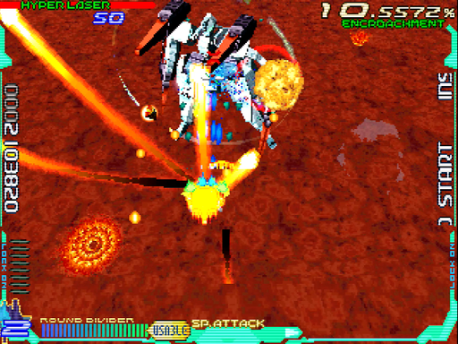
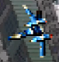
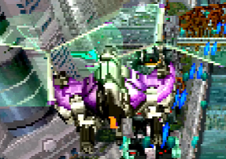

感情領域(Emotion Part)/砂漠面
道中はわりと大人しめ、ボスも1カ所を除いてそこそこ安定するので、領域としての難易度はおそらく一番イージーです。
ただし前半は「黄土色の背景に黄色の弾」、後半は「ドぎつい真っ赤な溶岩背景」と見づらさがハンパないため、そこは慣れないとキツいでしょう。
ちなみに、攻略本のインタビューいわくベースは「リアド」だそうです。
道中
チェックポイント
1つ目
画像上端のタンク1の横並びが見えた辺り
2つ目
通常パターン
1面の場合
開幕はアイテムキャリアーを右から出し、E384を巻き込んで倒します。この領域は地上敵主体のため、しっかりレーザーを当てましょう。
特に下画像の地点は、以下の敵がラッシュしてきます。ラウンドディバイダーで一気に吹っ飛ばしてしまうのもアリでしょう。
中盤の山場はM20a2。レーザーで動きを封じてから、ホーミングレーザーを撃ってきます。なので、まず対空レーザー砲台8を破壊。本体はハイパーレーザーで一撃です。後は、リフト3奥の連結部を壊せばOK。なお、連結部を壊せばまとめて倒せるので、それを狙っても良いでしょう。
M20a2とリフト3を速攻すると、E209が大量に出てきます。まとめ撃ちで稼げばウハウハ・・・ですが、弾を撃ってくるし突っ込んでくるので、迅速に処理すべし。
最後のラッシュはM1710×2機。分離前はどこを攻撃しても全体にダメージが通るので、出現直後からフルロックレーザーを2回浴びせれば、分離させる事無く倒せます。失敗した場合、カーブしながらの突進をそらして避けましょう。
2・3面の場合
この領域は、前半の敵編成が配置タイプでわりと変わります。なので、1面以外では侵食率によってパターンを変えるケースもあります。
もっとも大きな違いは、追加される敵がいる事でしょう。配置タイプ2のM2111はまだ良いとして、配置タイプ3のM0512はかなり厄介です。速攻で本体をハイパーレーザーします。その際、E3913のミサイルにロックを吸われないよう、注意して下さい。
いずれの場合も、速攻するとE0614が追加出現します。機雷と体当たりで逃げ道をふさいでくるので、ラウンドディバイダーを使ってしまうのも手です。
クセモノなのが、タンク1地帯に追加されるE384。画面中央辺りに降りてくるため、他の敵をロックしようとして空中衝突する事がたまにあります。いったん手前に戻り、きっちり倒しましょう。
これ以外は、1面の場合と同様に進めるはずです。
ランク調整パターン
1面の場合
基本的に全ての敵を逃がし、E9915のみ撃って侵食率100%を防ぎます。大型レーザー砲台5やE3616については、砲塔部に乗っかるぐらい近付くと弾封じが可能です。
その後はM20a2直後のE1217を撃ってスペシャルパワーアップを回収し、〆にM1710×2機をまとめ撃ち。これで、侵食率が70%台後半まで下がるはずです。
2面の場合
侵食率が60%前後になるよう、敵を倒して調整します。通常パターンでも述べた通り、地上の敵が多いため積極的にレーザーを撃っていって構いません。
M20a2に通じるシャッターの辺りから猛烈に侵食率が上がりますが、これを利用して80%弱ぐらいに持って行きます。ハイパーレーザーで倒せば60%弱に下がるので、心配は要りません。リフトはスルーしても良いでしょう。
あとは小型機をちょいちょい倒したり、M1710を片側だけ殲滅したり、侵食率と相談して調整すればOKです。
3面の場合
基本的には2面の場合と同じです。M20a2のくだりで、侵食率を60%台にしておくぐらいでしょうか。倒せばガッツリ下がるので、40%台に乗せられます。
そこを超えればチェックポイントはもう無いので、ハイパーレーザーやまとめ撃ちを存分に使いましょう。ボス戦前に30%台まで下げてあれば十分です。
ボス「Sem-slut」
耐久力(単位：レーザー本数)
- 1面(第1形態/第2形態)：200/50
- 2面(第1形態/第2形態)：270/90
- 3面(第1形態/第2形態)：340/120
- パーツ
- ファイヤーブレード
- 1面：30
- 2面：45
- 3面：54
- キャノン砲
- 1面：20
- 2面：25
- 3面：30
- ミサイルポッド
- 1面：15
- 2面：20
- 3面：24
- ファイヤーブレード
基本的なこと
1面からレーザー200本分という飛び抜けた耐久力を持っており、3面に至ってはレーザー340本分と全ボス最強の堅さです。
ただし両腕のファイヤーブレードを壊すと形態移行という点を知っていれば、単なるハッタリだと分かります。速攻するならコレ重要。
攻撃自体は全体的に大人しく、見て抜けられる範囲に入ります。1つを除けば。
第1形態
WR-01R/WR-02Rの場合
という訳で、ファイヤーブレードをさっさと壊します。本体へのハイパーレーザーの爆風に巻き込めるので、ひたすら当ててやりましょう。ただし、爆風と敵の位置関係でダメージにムラが出ます。たとえば画像の状況だと、向かって左側の腕にはあまり当たっていない事が分かりますね。
開幕は無防備なので最速で叩き込むと、続く3WAY炸裂弾も巻き込めます。仕留め損ねた分は撃たれてしまいますが、ロックをずらしてはなりません。避けるのは、本体へもう1回ハイパーレーザーしてからです。
頭部ガトリング砲も、よほどランクが高くなければ意外にスカスカです。隙間の大きい部分で裏に回り込み、なるべく縦移動だけで抜けましょう。横に動くと、パーツにロックを吸われてハイパーレーザーが遅れてしまいます。
ここでファイヤーブレードが飛んでくるので、フルロックしたら即ラウンドディバイダーを放ち、ハイパーレーザーを叩き込みます。手前に来る腕にロックを吸われないよう、注意すると良いでしょう。
頭部ガトリング砲～ファイヤーブレードをもう1セット繰り返すと、変形します。ここまで、どちらかの腕は残してください。さもないと以降を飛ばして形態移行してしまい、ラウンドディバイダーがリチャージできません。やりすぎかな? と感じたら、ファイヤーブレードを見てからハイパーレーザーしましょう。
ミサイル連射中は、とにかくショットとレーザーを当てまくってゲージを稼ぎます。ただし破壊し損ねた腕があれば、まずそちらを優先して壊します。
プラズマ弾は自機に最も近いものをショットで壊し、横→奥と逃げていくのがスムーズです。意外としつこく追ってくるため、油断せず逃げ切りましょう。
これが済むと、溶岩へ潜行して4方向炸裂弾をばらまいてきます。撃たれる前にビットを破壊できるため、ひたすらレーザーを連射しましょう。併せて本体にもレーザーを浴びせ、浮上してきたらハイパーレーザーをかまします。しっかり腕を壊していれば、ここで形態移行するはずです。
WR-03の場合
ハイパーレーザーが使えないため、さぞかしファイヤーブレードに手こずる・・・と思いきや、実はショットが良い具合に当たってくれます。なので、変形後から腕をしっかりロックしていけば、そこまで大きな差は出ないでしょう。
第2形態
バラまき弾は隙間が偏っているため、広い部分を抜けます。もしくは、後ろから弾が来ない方向へ回り込んで抜ける手もあります。いずれにしても、なるべく本体から軸をずらさず処理したいところ。
そして、このボス随一に厄介な放射レーザー。振りかぶってビットを投げてくるので、それを見つつフルロックできたら即ラウンドディバイダー→ハイパーレーザーします。上手くやるとモーションが終わるまで無防備なため、続けざまにハイパーレーザーをもう一発。

しっかり撃ち込めば次のバラまきで倒せますが、間に合わなくて放射レーザーがもう1回、という事もままあります。その場合は左右どちらかの端で、見て抜けるしかありません。あまり下に張り付いても危険なので、自機をちょっと浮かせる感じでいなしましょう。

1. タンク「Syntax B-4」 ↩
2. M20a「Lexicon γ 4a」 ↩
3. リフト「Syntax B-5」(※画像下部) ↩
4. E38「π Morphemes」 ↩
5. 大型レーザー砲台「Syntax A-7」 ↩
6.M32「Lexicon S-5」 ↩
7. E35「Syntax A-2」 ↩
8. 対空レーザー砲台「Syntax A-6」 ↩
9.E20「ξ Morphemes」 ↩
10. M17「Lexicon ε6」 ↩
11. M21「Lexicon K9」 ↩
12. M05「Lexicon LE1R」 ↩
13. E39「Syntax A-4」 ↩
14.E06「ζ Morphemes」 ↩
15.E99「Proto Morphemes」 ↩
16. E36「Syntax A-3」 ↩
17.E12「ι Morphemes」 ↩